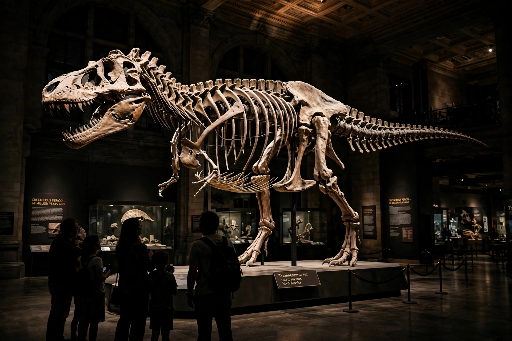
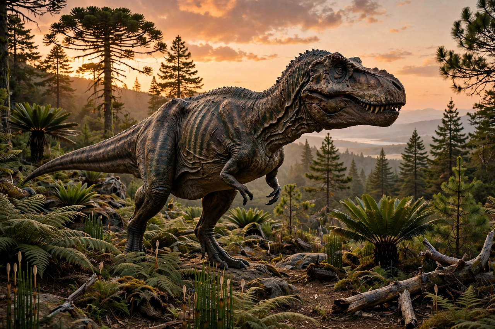

Dinosaur
| Dinosaurs | |
|---|---|
| First appearance | Late Triassic, about 240–230 million years ago |
| Dominant era | Mesozoic Era ("Age of Reptiles") |
| Extinction | Non-avian dinosaurs died out 66 million years ago; birds survive |
| Known genera | More than 1,000 named non-avian genera |
Dinosaurs are a diverse group of reptiles of the clade Dinosauria. They first appeared during the Triassic period, between 243 and 233 million years ago, and were the dominant terrestrial vertebrates for over 170 million years, from the beginning of the Jurassic until the end of the Cretaceous. Most dinosaurs became extinct in the Cretaceous–Paleogene extinction event 66 million years ago — but birds, which evolved from small feathered theropod dinosaurs, survived, and more than 11,000 living bird species are, in cladistic terms, dinosaurs themselves.


Characteristics
Dinosaurs are defined by anatomical features including an upright posture with legs held directly beneath the body — unlike the sprawling gait of other reptiles. They ranged in size from tiny hummingbird-sized birds and chicken-sized non-avian species to the gigantic long-necked sauropods, the largest land animals ever to exist, some exceeding 30 metres and 50 tonnes. The two great orders, distinguished by hip structure, are the Saurischia (including meat-eating theropods and sauropods) and Ornithischia (armoured, horned and duck-billed herbivores).
Discovery and research
Dinosaur bones had been found for centuries but were recognised as a distinct group only in the 19th century: Richard Owen coined "Dinosauria" in 1842, and the "Bone Wars" rivalry of Othniel Marsh and Edward Cope drove a frenzy of American fossil hunting in the 1870s–90s. A "dinosaur renaissance" from the late 1960s recast dinosaurs as active, warm-blooded animals, and discoveries in China's Liaoning deposits from the 1990s confirmed that many theropods bore feathers. The cause of the end-Cretaceous extinction is now firmly linked to the impact of a ~10 km asteroid at Chicxulub, Mexico, which left a global iridium layer and a crater — an event also recorded in the geological record worldwide.